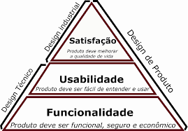

O que é Usabilidade?
Usabilidade são as execuções de determinada função de forma simples e objetiva, sem rodeios ou problemas.
Os cinco clitérios.
Os clitérios que a usabilidade é baseada de acordo com Jakob Nielsen são:
1. Eficiência
2. Satisfação do cliente
3. Intuitivo
4. Capacidade de Armazenamento
5. Confiabilidade
O que é Funcionalidade?
Funcionalides são determinadadas ações que podem ser realizadas no seu site, seja salvar vídeos, adicionar fotos, etc.
Principais Funcionalidades
1. SEO
2. Layout Modernizado
3. Acessibilidade
4. Contato Facilitado
5. Domínio Próprio
Referências
Abre o site na mesma guia: Hostgator
Abre o site em uma nova guia: Hostgator
Abre o site no parent frame: Hostgator
Abre o site em todo o corpo da janela: Hostgator